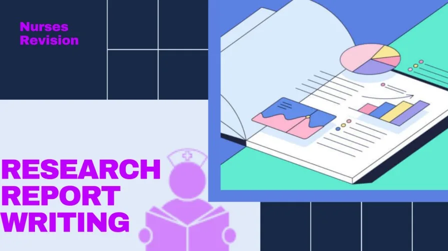

Expanded Nursing Uganda Explanation
Ward Report should be reviewed through safe maternal and newborn assessment, early recognition of danger signs, respectful communication and timely referral. Connect the definition to vital signs, bleeding, fetal or newborn wellbeing, patient education and local protocol requirements.
01 Carry out adequate feeding of patients (PEX 1.3.1)
Providing adequate nutrition is fundamental to patient recovery and well-being. Nurses assist patients who are unable to feed themselves due to weakness, physical limitations, or medical conditions.
Purpose of Assisting with Feeding:
- Ensure the patient receives adequate nutrition and hydration .
- Promote comfort and dignity during meal times.
- Monitor the patient's food intake and tolerance to the diet.
- Prevent aspiration (food or liquid entering the lungs).
- Provide an opportunity for social interaction and assessment of the patient's condition.
Patients Requiring Assistance with Feeding:
- Weak or fatigued patients
- Patients with difficulty swallowing (dysphagia)
- Patients with physical limitations affecting hand or arm movement
- Confused or disoriented patients
- Patients with vision impairment
- Patients with tubes or devices affecting the mouth or throat
Requirements:
- Patient's prescribed meal tray with appropriate food and drink
- Feeding utensils (spoon, fork, knife - as needed)
- Drinking straw or cup with lid
- Napkin or cloth
- Moist washcloth or wet wipe for hand/face cleaning
- Towel or bib to protect clothing
- Barrier cream if needed for skin protection
- Gloves (if potential contact with body fluids or patient has infection)
- Comfortable chair or bed in a quiet environment
Procedure for Assisting with Feeding:
- Perform hand hygiene and gather all necessary equipment.
- Verify the patient's identity and explain the procedure.
- Assess the patient's readiness to eat and their ability to participate.
- Assist the patient to a comfortable and safe position for eating , preferably sitting upright in a chair or high-Fowler's position in bed (at least 45-60 degrees). This helps prevent aspiration.
- Ensure the environment is clean and pleasant , minimizing distractions.
- Offer the patient a moist washcloth or wet wipe to clean their hands.
- Place the tray on a table within the patient's reach or on a bedside table.
- Describe the food items on the tray, especially if the patient has vision impairment.
- Assist the patient with cutting food if necessary.
- Offer fluids periodically throughout the meal to help with swallowing and hydration.
- Feed the patient small amounts, allowing them time to chew and swallow completely before offering the next bite.
- Use a spoon for feeding most foods; avoid using a fork for patients with dysphagia or poor coordination.
- Check for pocketing (food held in the cheeks) frequently, especially in patients with dysphagia.
- Observe for signs of swallowing difficulty or aspiration , such as coughing, choking, or wet vocal quality. If these occur, stop feeding immediately and notify the nurse in charge.
- Engage in conversation with the patient if appropriate, making the meal a social experience.
- Monitor the patient's food and fluid intake . Note how much of each item is consumed.
- After the meal, offer the patient a moist washcloth to clean their face and hands, and assist with oral hygiene.
- Return the tray to the appropriate area.
- Document the amount of food and fluid intake, any difficulties encountered, and the patient's response.
- Clean and store equipment, and perform hand hygiene.
02 Demonstrate giving and receiving of ward reports/records (PEX 1.3.7)
Effective communication during handoff is vital for patient safety and continuity of care. Ward reports (or shift reports) are structured exchanges of information between healthcare providers at the change of shift.
Purpose of Ward Reports:
- To transfer essential information about patients from one shift to the next.
- To provide a clear overview of the patient's current condition, treatment plan, and any changes or concerns.
- To ensure continuity of care and prevent errors.
- To provide an opportunity to ask questions and clarify information.
- To prioritize patient care for the upcoming shift.
- To meet legal requirements for accurate documentation.
Key Information to Include in a Ward Report:
- Patient's name, age, diagnosis, and physician.
- Current condition and significant changes since the last report.
- Vital signs and other monitoring data.
- Current treatment plan and any recent interventions.
- Medications administered and patient response.
- Results of recent tests or investigations.
- Patient's level of consciousness and ability to communicate.
- Status of IV lines, tubes, drains, or other devices.
- Recent intake and output .
- Skin integrity and presence of pressure areas.
- Any safety concerns or fall risks.
- Patient's emotional or psychological status .
- Family involvement and concerns.
- Planned procedures, appointments, or tests for the upcoming shift.
- Specific nursing interventions required.
Methods of Giving/Receiving Ward Reports:
- Verbal Report: May be given face-to-face, during walking rounds at the patient's bedside, or over the phone (less common for comprehensive reports).
- Written Report: Often involves using a standardized form or electronic health record summary.
- Walking Rounds/Bedside Report: Healthcare providers from the off-going and on-coming shifts visit each patient together to discuss the plan of care.
General Guidelines for Giving a Ward Report:
- Be prepared and organized . Have all necessary information and notes readily available.
- Reports should be clear, concise, and accurate . Focus on essential information and any changes.
- Maintain confidentiality ; use a private area if giving a verbal report not at the bedside.
- Report in a systematic manner , usually by patient or room number.
- Highlight any critical information, urgent concerns, or potential risks .
- Allow time for the receiving nurse to ask questions .
- Document the report given according to facility policy.
General Guidelines for Receiving a Ward Report:
- Be present and ready to receive the report at the designated time.
- Listen actively and take notes as needed.
- Ask questions to clarify any unclear information or to gather more details about specific patients.
- Verify information if necessary (e.g., double-check medication orders or vital signs).
- Acknowledge understanding of the report.
- Prepare to prioritize care based on the information received.
03 Nursing Uganda Clinical Lens
Use Carry out adequate feeding of patients as a practical nursing topic, not only a memorized definition. Translate theory into safe decisions, accountability, communication and service improvement.
- What to understand first: define carry out adequate feeding of patients, identify the normal or expected pattern, then explain what changes when the patient is unwell.
- Why it matters in care: the nurse must recognize risk early, explain findings clearly, document accurately and know when to escalate.
- How to revise it: connect each point to assessment, nursing diagnosis or care problem, intervention, rationale and evaluation.
04 Assessment Guide
- The problem, stakeholders, available resources, policy requirements and ethical issues.
- Risks to patients, staff, confidentiality, quality, costs and continuity.
- Documentation, reporting lines, supervision and evaluation measures.
05 Nursing Priorities, Rationales and Outcomes
- Use evidence, policy and professional standards to guide action.
- Communicate clearly, document decisions and protect confidentiality.
- Evaluate whether the action improves safety, learning or service delivery.
The rationale for these priorities is patient safety: nursing actions should prevent deterioration, reduce discomfort, support recovery and create clear evidence for the next caregiver.
- Expected outcome: The plan is documented, realistic, ethical and improves patient care or learning outcomes.
06 Patient Teaching and Revision Check
- Explain carry out adequate feeding of patients in simple language the patient or caregiver can repeat back.
- Teach warning signs, medicine or follow-up instructions, hygiene or lifestyle points where relevant.
- For exams, prepare a short answer using: definition, causes or risk factors, signs, assessment, management, complications and prevention.
- For ward practice, document baseline findings, actions taken, patient response and the plan for review.
Illustrations and Diagrams (2)


Related Video Lectures
Watch nursing lecture videos on YouTube for this topic. Opens in a new tab.
Watch on YouTubeExternal link: YouTube may use its own cookies and terms. Nursing Uganda is not affiliated with YouTube.